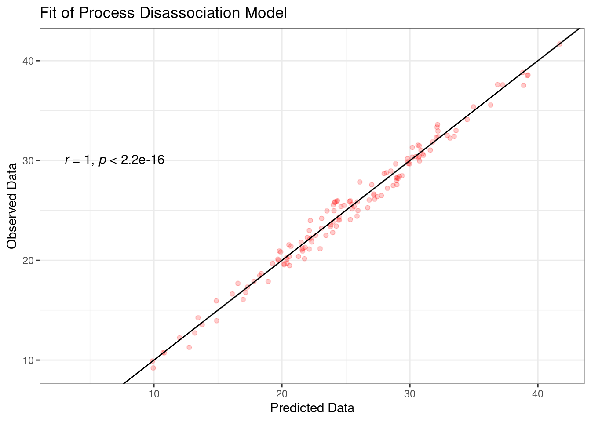

# Install MPT Package
# install.packages("MPTinR")
# install.packages("ggpubr")
# install.packages("effectsize")Workshop Multinomial Processing Tree Models
1 Einführung
Heute Beschäftigen wir uns mit der Anwendung von MPT Modellen in R. Hierzu nutzen wir einen Datensatz von Frenken et al. (2022), der sich mit der Verarbeitung von Stereotypen befasst. Zunächst müssen wir aber die entsprechenden Packages installieren. Wir nutzen das Package (MPTinR), das viele Funktionalitäten für das MPT Modelling mit sich bringt ! Zusätzlich installieren wir noch ggpubr und effectsize um später einige nette Features beim Plotten und Analysieren der Ergebnisse zu haben:
Nun laden wir die Pakete die wir für den weiteren Verlauf brauchen werden sowie unseren Datensatz ein:
library(MPTinR)
library(tidyverse)
library(ggpubr)
library(effectsize)
Study_2_dm <- read_csv("Study_2_dm.csv",
col_types = cols(...1 = col_skip(),
stimulus = col_factor(levels = c("gun","phone")),
response = col_integer(),
condition = col_factor(levels = c("black","white"))))2 Der Shooter - Bias
Wie schon in der letzten Sitzung vorgestellt handelt es sich beim beim First Person Shooter Task (FPST) um ein Paradigma, mit dem Stereotype und deren Auswirkungen auf Entscheidungen untersucht werden können. Hierbei werden üblicherweise verschiedene Ethnien (z.B. schwarze oder weiße Personen), entweder mit einer Waffe (threat) oder einem ungefährlichem Objekt (z.B. Telefon, harmless) gezeigt. Die Versuchspersonen werden instruiert unabhängig von der Hautdfarbe so schnell und korrekt wie möglich auf bewaffnete Ziele zu schiessen. Im Gegensatz dazu soll nicht auf unbewaffnete Ziele geschossen werden.
3 Model Definition
Wir werden heute versuchen, die Daten von Frenken et al. mit dem Process Dissociation Model zu fitten. Dieses müssen wir aber zunächst in R definieren. Die Modellgleichungen leiten sich aus folgendem zugrundeliegendem Wahrscheinlichkeitsbaum ab:
Das Modell hat nur zwei freie Parameter, zum einen c , der die Wahrscheinlichkeit angibt das kontrollierte Verarbeitungsprozesse aktiviert werden und zum anderen a der die Wahrscheinlichkeit angibt, dass diese Kontrolle fehlschlägt und eine stereotype Verarbeitung aktiviert wird.
Zur Erinnerung: das experimentelle Paradigma in Payne et al. ist ein Sequential Priming Task, bei dem die Versuchspersonen ein schwarzes oder weißes Gesicht gesehen haben und dann entscheiden sollten, ob es sich bei dem anschließend gezeigten Objekt um einen Waffe oder ein Werkzeug handelt:
In unserem Fall ist das Paradigma also ähnlich, die Versuchspersonen sehen entweder einen Schwarzen oder einen Weißen (unbewaffnet vs. bewaffnet) und sollen dann entscheiden, ob geschossen werden soll oder nicht. Das heisst, wir können das Modell im Prinzip ekaxt so wie es ist, auf die Daten von Frenken et al. übertragen.
Nun müssen wir das Modell allerdings definieren. Hierzu müssen die Gleichungen für jeden Wahrscheinlichkeitsbaum aufgestellt werden. Jeder Baum repräsentiert eine Zielkategorie:
| Hautfarbe | Objekt |
|---|---|
| Schwarz | Waffe |
| Weiß | Waffe |
| Schwarz | Telefon |
| Weiß | Telefon |
Es müssen nun für jede dieser Outcome Kategorien Gleichungen für die unterschiedlichen Pfade definiert werden, welche zu den jeweiligen “Hits” und “Misses” führen (“+” bzw. “-”auf der Abbildung). Zusätzlichmüssen insgesamt 4 Parameter definiert werden. A und C jeweils für schwarze und weiße Hautfarbe, um Unterschiede in den Parametern, die auf die Hautfarbe zurückgehen, identifizieren zu können:
Für MPTinR können die Gleichungen in einem einfachen “String” definiert werden. Hier ist die erste Gleichung für die Kategorie “White/ Phone” bereits eingetragen. In der Kategorie “White/Phone” führt der Pfad \[c\] und der Pfad \[(1-c) \cdot a\] zu einem “Hit”.
Im Gegensatz dazu führt \[(1-c) \cdot (1-a)\] zu einem Miss. Tragt immer zunüchst die Gleichung für einen Hit und dann die Gleichungen für einen Miss ein. Da zwischen Pfaden die Wahrscheinlichkeiten addiert werden können, ist also die Gesamtgleichung eines “Hits” für die Kategorie “White/Phone”:
\[c + (1-c) \cdot a\] und für einen Miss
\[ (1-c) \cdot (1-a)\]
da es nur einen Pfad zu einem “Miss” gibt ! Vervollständigt nun die Gleichungen für die restlichen Kategorien. Denkt daran das Ihr die Parameter für die schwarze und weiße Hautfarbe unterschiedlich benennt!
# Parameters for Black and White Skin Color!
# c_w = c white, a_w = a white c_b = black, a_b = a black
pd <- "
# WT
c_w + (1-c_w)*a_w
(1-c_w)*(1-a_w)
# WG
c_w + (1-c_w) * (1-a_w)
(1-c_w) * a_w
# BT
c_b + (1-c_b)*(1-a_b)
(1-c_b) * a_b
# BG
c_b + (1-c_b)*a_b
(1-c_b)*(1-a_b)
"
Wenn ihr die Gleichungen alle definiert habt, könnt ihr das Modell mit MPTinR auf Korrektheit überprüfen lassen:
check.mpt(textConnection(pd))$probabilities.eq.1
[1] TRUE
$n.trees
[1] 4
$n.model.categories
[1] 8
$n.independent.categories
[1] 4
$n.params
[1] 4
$parameters
[1] "a_b" "a_w" "c_b" "c_w"Wir sehen hier einen Test ob alle Wahrscheinlichkeiten sich zu 1 addieren, die Anzahl der Bäume, der gesamten und unabhängigen Kategorien, sowie der Parameter. In den Daten müssen immer exakt so viele Kategorien vorhanden sein, wie im Modell definiert ! Zusätzlich darf die Anzahl Parameter nicht größer sein, als die Anzahl der unabhängigen Kategorien - ansonsten ist das Modell nicht identifizierbar - das beudeut das mehr unbekannte als bekannte Größen vorhanden sind - die Gleichungen sind nicht lösbar.
4 Data Dredging
Um die Daten von Frenken et al. zu Modellieren, müssen die Daten zunächst in ein anderes Format gebracht und umkodiert werden - in “Hit” und “Miss” für jede Kategorie. Dies kann wie folgt mit mutate(),case_when() und pivot_wider() getan werden:
# Define Edge Correction function
edge_correct <- function(x){
x = ifelse(x==0, x+1,x)
return(x)
}
# Recode Data from Frenken et al.
# Umkodieren der Daten hin zu Accuracy
# In den Daten sind die Antworten nicht nach Accuracy, sondern nach response codiert (response coding). Daher müssen wir die Daten vorher umkodieren, damit die Accuracy codiert wird. Dies können wir mit case_when tun. Kodiert nun den Datensatz wie folgt neu in dem ihr einen neue Spalte "ACC" erzeugt, die in Abhängigkeit von "stimulus" erzeugt wird:
# Wenn Stimulus = gun ist, dann ist response 0 korrekt - also 1
# Wenn Stimulus = gun ist, dann ist response 1 inkorrekt - also 0
# Bei Phone stimmt die zuordnung zufällig, da 1 bedeutet nicht zu schiessen. Ist aber nicht immer der Fall ! Trotzdem müssen wir die Zuordnung eintragen, damit für alle elemente in der Spalte ACC ein Wert steht!
freq_dat <- Study_2_dm %>% mutate(ACC = case_when((grepl("gun",stimulus) & response == 0) ~ 1,
(grepl("gun",stimulus) & response == 1) ~ 0,
(grepl("phone",stimulus) & response == 1) ~ 1,
(grepl("phone",stimulus) & response == 0) ~ 0))
# Berechnung der hits und misses und Auszählen der Trials jeder VP den jeweiligen Bedingungen
freq_dat <- freq_dat %>% group_by(subj_idx,stim) %>% summarise(hits = sum(ACC), ntrials=n(), miss=ntrials-hits)`summarise()` has grouped output by 'subj_idx'. You can override using the
`.groups` argument.# Transformieren zum Wide Format für MPTinR
freq_dat <- freq_dat %>% pivot_wider(.,names_from = c("stim"),values_from = c("hits","miss"),values_fill = F,id_cols="subj_idx")
# Anpassung der Reihenfolge der Daten analog zu den Modellgleichungen.
freq_dat <- freq_dat %>% relocate(subj_idx,hits_wp,miss_wp,hits_wg,miss_wg,hits_bp,miss_bp,hits_bg,miss_bg)
# Anwenden einer Edge-Correction, um die Nullbeobactungen in der "miss" Kategorie zu eleminieren
freq_dat <- freq_dat %>% mutate(across(starts_with("miss"), ~ edge_correct(.)))
head(freq_dat)# A tibble: 6 × 9
# Groups: subj_idx [6]
subj_idx hits_wp miss_wp hits_wg miss_wg hits_bp miss_bp hits_bg miss_bg
<dbl> <dbl> <dbl> <dbl> <dbl> <dbl> <dbl> <dbl> <dbl>
1 0 28 5 23 4 28 1 30 1
2 1 11 1 27 2 16 2 28 2
3 3 23 1 33 1 10 1 25 1
4 4 33 1 27 1 24 1 35 1
5 5 23 4 25 4 28 2 31 1
6 6 31 1 18 5 26 1 34 15 Fit the Model
Zum fitten des Modells müssen die Daten für MPTinR in der gleichen Reihenfolge angeordnet sein, wie auch die Gleichungen definiert sind! Dies solltet ihr immer überprüfen, bevor ein Modell gefittet wird.
Nun kann das Modell mit dem Befehl fit.mpt geschätzt werden. Dabei müssen wir die genauen Spalten unseres Dataframes freq_dat angeben, da eine Spalte subj_idx im Dataframe enthalten ist, die keine Häufigkeiten enthält. Die fit.mpt Funktion nimmt allerdings nur Daten an, die die gleiche Anzahl an Spalten aufweisen, wie im Modell definierten gesamten Kategorien vorhanden sind. Andernfalls wird eine Fehlermeldung ausgegeben. Da im Dataframe insgesamt 9 Spalten vorhanden sind, muss also die erste Spalte ausgelassen werden. Dies kann einfach mit der Auswahl der Spalten mit dem Zugriff [Zeilen,Spalten] geschehen. Als model.filename wird der String übergeben in dem die Gleichungen definiert wurden. Dazu wird erneut textConnection() verwendet. Das Argument n.optim definiert die Anzahl der Optimierungsdurchläufe, wird dieses Argument nicht abgegeben, werden standardmäßig 5 Optimierungsdurchläufe durchgeführt.
# Fit Process Disassociaton Model
fit <- fit.mpt(freq_dat[,2:9],model.filename = textConnection(pd),n.optim = 10)Presenting the best result out of 10 minimization runs.[1] "Model fitting begins at 2024-02-04 00:43:08.68215"
[1] "Model fitting stopped at 2024-02-04 00:43:13.079921"
Time difference of 4.39777 secsNun können verschiedene Informationen mit Hilfe des $ Operator aus dem fit Objekt ausgegeben werden, hierzu benutzen wir den $ Operator. Zunächst sehen wir uns den Mittelwert der unterschiedlichen individuellen Parameter nach Gruppen/Bäumen an, sowie die Parameter für die aggregierten Daten (also für die aufsummierten Hits und Misses über alle Personen):
# Speichern der Parameter in einen neuen Dataframe
theta_mean <- fit$parameters$mean[1:4,1]
theta_aggregated <- fit$parameters$aggregated
print(theta_aggregated) estimates lower.conf upper.conf
a_b 0.5624551 0.5191306 0.6057796
a_w 0.5048275 0.4670972 0.5425577
c_b 0.8738353 0.8626938 0.8849767
c_w 0.8388067 0.8266458 0.8509677Wir sehen das es wohl einen signifikanten Unterschied zwischen der Hautfarbe bei dem Control Parameter c auf aggregierter Ebene geben könnte. Auf dem Parameter a, welcher automatisierte, von Stereotypen getriebenen Prozesse abbildet, zeigt sich hingegen eine Überlappung der Konfidenzintervalle. Um zu prüfen ob es einen signifikanten Unterschied auf individuellem Level gibt, müssen wir die individuellen Parameter der einzelnen Versuchspersonen heranziehen. Zünachst müssen diese aus dem fit Objekt in einen Dataframe überführt werden:
# Erstellen einer Matrix für die Parameter
theta_subj <- matrix(NA,nrow=nrow(freq_dat),ncol=4)
colnames(theta_subj) <- c("a_b","a_w","c_b","c_w")
# Loopen über alle individuellen Parameter, nur die Punktschätzer werden gespeichert
for (i in 1:nrow(freq_dat)){
theta_subj[i,] <- fit$parameters$individual[,1,i]
}
# Nun lassen wir uns die ersten 10 Zeilen ausgeben, um uns das Ergebnis anzusehen
head(theta_subj,10) a_b a_w c_b c_w
[1,] 0.5166667 0.4943820 0.9332592 0.7003367
[2,] 0.6250000 0.4528302 0.8222222 0.8477011
[3,] 0.7027027 0.4137931 0.8706294 0.9289216
[4,] 0.5901639 0.5483871 0.9322222 0.9348739
[5,] 0.6808511 0.4821429 0.9020833 0.7139208
[6,] 0.5645161 0.8743169 0.9343915 0.7513587
[7,] 0.3827160 0.6271186 0.8954839 0.9275184
[8,] 0.5974026 0.8108108 0.8920056 0.6476190
[9,] 0.3846154 0.6571429 0.8916667 0.8731884
[10,] 0.1724138 0.2571429 0.8388889 0.85042746 Analyse
Jetzt können wir mit Hilfe eines paired t-tests und der t.test() Funktion (wir vergleichen die Parameter innerhalb von Personen zwischen den experimentellen Bedinungen) analysieren, ob es einen signifikanten Unterschied auf individueller ebene gibt. Die t-test() Funktion nimmt als Argument jeweils die zwei Spalten, die verglichen werden sollen. Wir müssen also für die beiden Parameter \(a\) und \(c\) jeweils einen t-test rechnen, der beide Gruppen vergleicht. Wir setzen zusätzlich das Argument paired=TRUE, da es sich um einen paired t-test handelt und das Argument var.equal=T, da wir annehmen das die Varianz in beiden Gruppen gleich ist:
# t-test für beide Parameter
theta_a_comp <-t.test(theta_subj[,"a_b"],theta_subj[,"a_w"],
paired = T,
var.equal = T)
theta_c_comp <- t.test(theta_subj[,"c_b"],theta_subj[,"c_w"],
paired = T,
var.equal = T)
# Ergebnis ausgeben
print(theta_a_comp)
Paired t-test
data: theta_subj[, "a_b"] and theta_subj[, "a_w"]
t = 3.1394, df = 136, p-value = 0.002077
alternative hypothesis: true mean difference is not equal to 0
95 percent confidence interval:
0.0233750 0.1029489
sample estimates:
mean difference
0.06316194 print(theta_c_comp)
Paired t-test
data: theta_subj[, "c_b"] and theta_subj[, "c_w"]
t = 2.2045, df = 136, p-value = 0.02917
alternative hypothesis: true mean difference is not equal to 0
95 percent confidence interval:
0.002388014 0.044009140
sample estimates:
mean difference
0.02319858 Wir sehen auf beiden Parametern einen signifikanten Unterschied ! Nun können wir mit dem Package effectsize Cohen's d berechnen, um die Größe des Effekts zu interpretieren. Dazu nutzen wir den Befehl cohens_d() und übergeben dem Befehl als Argument lediglich das Objekt theta_a_comp und theta_c_comp, in dem wir die Test gespeichert haben, sowie die Information das es sich um einen gepaarten t-test handelt:
# verbose = F bedeutet nur, dass wir uns keine Warnungen etc. ausgeben lassen.
effectsize::cohens_d(theta_a_comp,paired = T,verbose = F)d | 95% CI
-------------------
0.27 | [0.10, 0.44]effectsize::cohens_d(theta_c_comp,paired = T,verbose = F)d | 95% CI
-------------------
0.19 | [0.02, 0.36]Wir sehen hier, das der Effekt auf den Parameter \(a\), welcher die automatisierte, stereotypische Verarbeitung abbildet, zwischen den Gruppen substanziell ist und einem kleinen bis mittleren Effekt entspricht. Für den \(c\) Parameter, welcher die kontrollierte Verarbeitung abbildet, ist dieser Effekt kleiner und entspricht einem kleinen Effekt nach Cohen.
Dies entspricht unseren Überlegungen und auch den Ergebnissen des Diffusionsmodells, dass es bei stereotyp-beladenen Entscheidungen in diesem Fall zum einen eine höhere kontrollierte Verarbeitung gibt (Personen wissen, dass es Stereotype gibt und versuchen sie zu vermeiden) und zum anderen, dass es jedoch häufiger passiert, das diese Prozesse scheitern und die automatisierte stereotype Verarbeitung einsetzt.
7 Modelfit und Identifizierbarkeit
MPTinR gibt uns auch eine Reihe von Indikatoren zur Bestimmung des Modelfits aus. Auf diese kann wie folgt zugegriffen werden
# Modelfit abspeichern
model_fit <- fit$goodness.of.fit$aggregated
# Ansehen des individuellen Modelfits
head(fit$goodness.of.fit$individual,10) Log.Likelihood G.Squared df p.value
1 -34.12942 0.000000e+00 0 1
2 -24.34660 -1.421085e-14 0 1
3 -16.25804 0.000000e+00 0 1
4 -17.59374 -7.105427e-15 0 1
5 -34.75840 0.000000e+00 0 1
6 -25.31044 0.000000e+00 0 1
7 -20.27958 -7.105427e-15 0 1
8 -39.81650 -1.421085e-14 0 1
9 -22.50232 0.000000e+00 0 1
10 -30.00681 -7.105427e-15 0 1# Summierter Fit
fit$goodness.of.fit$sum Log.Likelihood G.Squared df p.value
1 -3528.429 -5.258016e-13 0 1# Gesamtmodelfit (wird immer im Text angegben)
print(model_fit) Log.Likelihood G.Squared df p.value
1 -3895.856 0 0 1Die für den Modelfit wichtige Statistik ist die G²-Statistik. G² wird in der Schätzung der MPT Modelle als Diskrepanzfunktion minimiert und bildet das Äquivalent zur Maximierung der Likelihood-Funktion bei kontinuierlichen Daten:
\[G^2(\theta)=-2 \sum_{i=1}^J n_j \ln \left(\frac{n_j}{N \cdot p_j(\theta)}\right)\]
Es wird hier die Abweichung zwischen beobachteten (\(n_j\)) und reproduzierten Häufigkeiten gegeben der geschätzten Parameter (\(N \cdot p_j(\theta)\)) berechnet. G² kann zur Berechnung des Modelfits herangezogen werden, als auch zum Modellvergleich. Es kann die Nullhypothese geprüft werden, ob die beobachteten Daten gegeben der geschätzten Wahrscheinlichkeiten plausibel sind, da G² \(\chi^2\) verteilt mit den Freiheitsgraden
\[d f=\sum_{k=1}^K\left(J_k-1\right)-S \] ist. Hierbei ist \(K\) die Anzahl der unterschiedlichen Kategorien (hier 4, Hautfarbe x Objekt) und \(J_k\) die möglichen Outcomes für die jeweilige Kategorie \(k\) (hier jeweils 2, Hits und Misses). \(S\) bezeichnet die Anzahl der Parameter die wir frei schätzen (hier 4). Laut Formel ergeben sich also folgende Freiheitsgrade
\[\sum_{k=1}^4\left(2-1\right)-4 = 0 \]
Dies bedeutet, das unsere Modell perfekt identifiziert ist ! Ein Modell muss immer die Bedingung erfüllen, dass es mindestens soviele Freiheitsgerade wie Parameter besitzt:
\[S \leq \sum_{k=1}^K\left(J_k-1\right)\]
Ansonsten ist nicht identifiziert und kann nicht geschätzt werden. In unserem Fall ist das Modell also perfekt identifiziert, daher wird genaugenommen nichts geschätzt, sondern die Wahrscheinlichkeiten berechnet. Ist ein Modell nicht identifiziert, können Parameter fixiert oder gleichgesetzt werden, um die Anzahl der Freiheitsgerade zu erhöhen. In unserem Fall ergibt sich also eine nicht-signifikante Teststatistik für G², mit einem p-Wert von 1 und einem G² von faktisch 0. Daher können wir die Nullhypothese, dass die Daten unter den geschätzten Wahrscheinlichkeiten plausibel sind, nicht ablehnen.
model_fit Log.Likelihood G.Squared df p.value
1 -3895.856 0 0 1Dies bedeutet das Modell fittet perfekt, was an der eindeutigen Identifizierung des Modells liegt, da
\[df = S\] gilt. Wir können hier also die Parameter berechnen. Normalerweise sollte es immer Freiheitsgrade geben, dies könnte Beispielsweise mit einem komplexeren Modell erreicht werden (z.B. mit mehr Parametern).
8 Grafische Darstellung des Modelfits
Der Modelfit kann auch grafisch dargestellt werden. Entweder mit der Funktion prediction.plot(), dieser stellt die Abweichung zwsichen beobachten und geschätzten Häufigkeiten dar. Ich habe hier ein limit von -1 eins bis 1 gesetzt, dar die Abweichengen in den Bäumen 3 und 4 so gering sind, das sie auf der 14 Potenz dargestellt wurden. Eine Abweichung von 0 bedeutet, es liegt ein perfekter Fit für diese Kategorien vor, in unserem Fall jeweils die Outcomes Hits (1) und Misses (2).
MPTinR::prediction.plot(fit,model.filename = textConnection(pd),ylim = c(1,-1))
Eine weitere Möglichkeit den Modelfit grafisch darzustellen ist, die beobachteten und die durch das Model reproduzierten Daten in einem Scatterplot gegeneinander zu plotten und die Korrelation zu berechnen. Dies haben wir bereits in der Übung zu ggplot getan. MPTinR gibt uns praktischerweise direkt die beobachteten und reproduzierten Daten im fit-Objekt mit aus, sodass wir diese direkt in ggplot angeben können. Diese können folgendermaßen abgerufen werden:
observed<- fit$data$observed$individual
predicted <-fit$data$predicted$individual Damit können wir dann direkt eine Korrellationsmatrix erstellen:
cor(observed,predicted) [,1] [,2] [,3] [,4] [,5] [,6]
hits_wp 1.00000000 -0.2171500 -0.03338640 -0.08907613 0.38012618 -0.2102968
miss_wp -0.21715000 1.0000000 -0.17540235 0.28977155 -0.25852280 0.4867141
hits_wg -0.03338640 -0.1754023 1.00000000 -0.26177232 -0.04594584 -0.2079016
miss_wg -0.08907613 0.2897716 -0.26177232 1.00000000 -0.04378506 0.4128029
hits_bp 0.38012618 -0.2585228 -0.04594584 -0.04378506 1.00000000 -0.2525995
miss_bp -0.21029684 0.4867141 -0.20790165 0.41280286 -0.25259949 1.0000000
hits_bg 0.09289815 -0.2397399 0.03873533 -0.19819066 0.07890132 -0.3150341
miss_bg -0.24401067 0.4790734 -0.38629078 0.17119394 -0.21022623 0.5079492
[,7] [,8]
hits_wp 0.09289815 -0.2440107
miss_wp -0.23973993 0.4790734
hits_wg 0.03873533 -0.3862908
miss_wg -0.19819066 0.1711939
hits_bp 0.07890132 -0.2102262
miss_bp -0.31503414 0.5079492
hits_bg 1.00000000 -0.3628347
miss_bg -0.36283468 1.0000000cor(predicted,observed) hits_wp miss_wp hits_wg miss_wg hits_bp miss_bp
[1,] 1.00000000 -0.2171500 -0.03338640 -0.08907613 0.38012618 -0.2102968
[2,] -0.21715000 1.0000000 -0.17540235 0.28977155 -0.25852280 0.4867141
[3,] -0.03338640 -0.1754023 1.00000000 -0.26177232 -0.04594584 -0.2079016
[4,] -0.08907613 0.2897716 -0.26177232 1.00000000 -0.04378506 0.4128029
[5,] 0.38012618 -0.2585228 -0.04594584 -0.04378506 1.00000000 -0.2525995
[6,] -0.21029684 0.4867141 -0.20790165 0.41280286 -0.25259949 1.0000000
[7,] 0.09289815 -0.2397399 0.03873533 -0.19819066 0.07890132 -0.3150341
[8,] -0.24401067 0.4790734 -0.38629078 0.17119394 -0.21022623 0.5079492
hits_bg miss_bg
[1,] 0.09289815 -0.2440107
[2,] -0.23973993 0.4790734
[3,] 0.03873533 -0.3862908
[4,] -0.19819066 0.1711939
[5,] 0.07890132 -0.2102262
[6,] -0.31503414 0.5079492
[7,] 1.00000000 -0.3628347
[8,] -0.36283468 1.0000000ggplot(mapping= aes(x=observed, y=predicted)) +
geom_jitter(width = 1,height = 1, color="red", alpha=0.2) +
geom_abline(slope = 1,intercept = 0) +
stat_cor(method = "pearson", label.x = 3, label.y = 30,cor.coef.name = "r") +
labs(y="Observed Data", x="Predicted Data",title = "Fit of Process Disassociation Model") +
theme_bw() 
Schritt für Schritt:
ggplot(mapping = aes(x=observed, y=predicted))Hier geben wir an, was auf der x und auf der y Achse geplottet werden sollgeom_jitter(width = 2,height = 2, color="red", alpha=0.2)In diesem Fall nehme ich statt geom_point(), geom_jitter() da ansonsten die Punkte alle auf einer Linie liegen würden!geom_abline(slope = 1,intercept = 0)Hier füge ich eine Linie ein, die den Ursprung 0 und die Steigung 1 hat - das entspricht dem theoretische perfekten Fitstat_cor(method = "pearson", label.x = 3, label.y = 30,cor.coef.name = "r")Dies ist aus dem Paket ggpubR das wir bereits in der ggplot Übung angesprochen hatten.stat_corfügt die Korrelation zwischen den geplotteten Variablen ein. Dabei sind dielabel.Befehle die
Koordinaten, wo genau die Korrelation stehen muss.labs(y="Observed Data", x="Predicted Data",title = "Fit of Process Disassociation Model")Einfügen der Achsenbeschriftung und des Titelstheme_bw()schöner Theme für den Plot.
Zum Verständnis, würden wir geom_point in diesem Fall verwenden, sähe der Plot folgendermaßen aus:
ggplot(mapping = aes(x=observed, y=predicted)) +
geom_point(color="red", alpha=0.2) +
geom_abline(slope = 1,intercept = 0) +
stat_cor(method = "pearson", label.x = 3, label.y = 30,cor.coef.name = "r") +
labs(y="Observed Data", x="Predicted Data",title = "Fit of Process Disassociation Model") +
theme_bw()